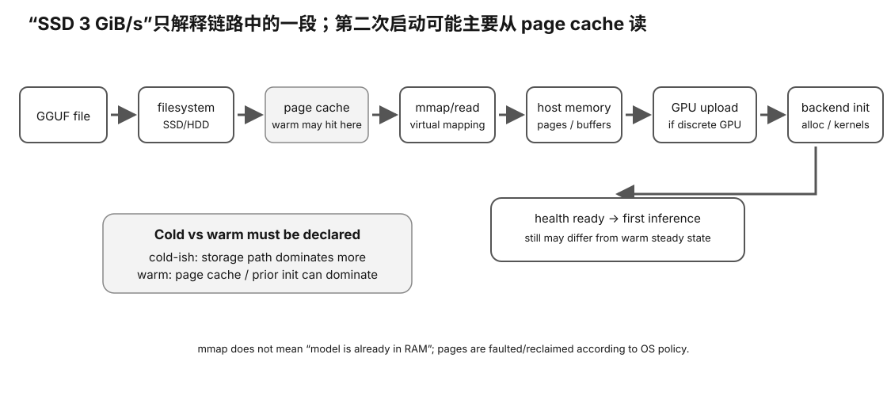

开始前，你应该知道模型文件在开始推理前要经过磁盘读取、文件系统/page cache、mmap 或普通 I/O、主机内存与设备侧加载等步骤，并理解“模型文件大小”不等于“每次启动都从物理 SSD 完整读取一遍”。
你换了一块更快的 SSD，第二次启动模型明显变快，于是准备把改善全部归功于新盘；但真正加速的也可能是 page cache、mmap 行为、模型已驻留、runtime 初始化路径或其他主机侧状态。
真正的问题是：怎样区分 storage、page cache、host memory、mmap 和 runtime 初始化对 startup 的贡献，并保证 cold/warm 结果没有被混在一起？否则“这个 SSD 让模型启动快一倍”只是未经隔离的猜测。

GGUF → filesystem → page cache → mmap/read → host memory → GPU upload → backend init → health ready → first inference
T_read ≈ model bytes / effective source bandwidth
20 GiB 模型，如果真的完整从：
0.2 GiB/s HDD
读出来，光读就约：
100s
20 / 3 ≈ 6.67s
启动当然可能快很多。
但这仍然没包含：
parse alloc GPU upload backend init
Linux 普通文件读和 file-backed mmap 会经过 page cache。
第一次访问以后：
SSD/HDD → RAM page cache
第二次可能：
RAM page cache → process
而不是重新等磁盘。
不要马上说：
我的 SSD = 15 GiB/s
你可能测到的是：
RAM + page cache
你今天早上已经跑过模型。
或者：
indexer backup 另一个进程
读过它。
所以：
run1 = cold
没有证据就不能这么写。
mmap(file)
首先是把文件建立到虚拟地址空间的映射。
它不等于：
return 之前已经把全部 20 GiB 从 SSD copy 到 RAM
页面可以在之后访问时 fault 进来。
如果系统有 util-linux 的：
fincore
它可以提供 file-page residency evidence。
但它仍然不能告诉你：
SSD controller cache GPU upload bottleneck backend init bottleneck
因为它会影响整个主机的 page cache，不只是你的模型。
默认实验宁可写：
initial cache state = UNKNOWN
也不为了造一个“漂亮 cold benchmark”去扰动整台机器。
你先：
sha256sum 20GB.gguf
然后再测“cold startup”。
SHA 已经把文件读了一遍，可能把大量页面放进 cache。
离散 GPU 全 offload 时，weights 还要进入 device memory。
粗略：
T_ready ≈ T_read/page-fault + T_host + T_device_upload + T_backend
这些阶段实际可能有 overlap/lazy behavior，所以只是 mental model。
Startup：
storage → host → GPU
steady decode：
weights resident in VRAM → VRAM bandwidth / kernels
因此：
慢硬盘 ≠ steady TG 永远慢
| source | BW | simple ready | steady TG |
|---|---|---|---|
| HDD-like | 0.2 GiB/s | 102.67s | 50 tok/s |
| SATA-like | 0.5 GiB/s | 42.67s | 50 tok/s |
| NVMe-like | 3 GiB/s | 9.33s | 50 tok/s |
| page-cache-like | 20 GiB/s | 3.67s | 50 tok/s |
这些全是教学数字。
pass1: initial cache UNKNOWN read prefix 512 MiB 2.1 GiB/s pass2: after same-file access 8.7 GiB/s
正确：
second pass was faster after same-file read
错误：
SSD speed = 8.7 GiB/s
file/read behavior startup readiness first inference steady PP/TG
这样你才知道升级 SSD 到底是在优化哪一段。
硬件门槛：L0 模拟/设计主路径；真实服务或 Linux/NVIDIA 机器是增强。
成本：0 元。
风险：safe；不通过危险电气/固件修改来“制造”故障。
做 Experiment 80：storage/load model；Linux 真机做 Experiment 81：real startup。
设计 cold/warm startup A/B：记录模型文件、load mode、page residency/cache 状态、startup time、steady inference；不要把 warm-cache 结果冒充磁盘性能。
换 OS、runtime 或 GPU 后，先重建 timeline + identity + measurement boundary，再判断“更快/更稳/更省电”是否成立。
model file on storage → filesystem → page cache → mmap/read → host memory / backend mapping → GPU/device allocation → ready
任何一层慢，都可能让 cold start 变长；但模型已经驻留并稳定 decode 后，SSD 通常不再是每 token 的主数据通路。
第一次加载一个大模型时，页面可能真的来自 SSD；第二次启动时，OS page cache 可能已经保存大量数据。
cold start: storage dominates more warm start: page cache may dominate
所以“第二次只要 6 秒”不能证明 SSD 能以同样速度从冷态读取。
一个 40 GiB 模型：
cold load: 55 s warm load: 9 s steady TG: 48 tok/s vs 48 tok/s
合理结论是“storage/cache 显著影响 startup”，而不是“更快 SSD 让 decode 快 6×”。
mmap 只是建立虚拟地址映射；实际被访问的文件页仍要进入物理内存/page cache。观察 RSS、available memory、page cache 和 major faults 才能理解真实状态。
模型工作流可能同时存在：
source weights + converted GGUF + multiple quants + cache/temp files + evaluation corpus + logs/evidence
“模型 30 GiB”不等于只需要 30 GiB SSD。